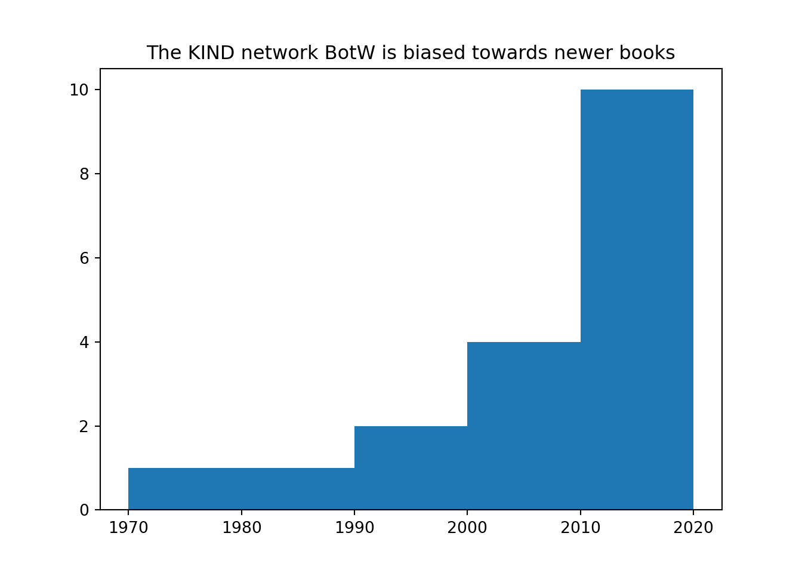
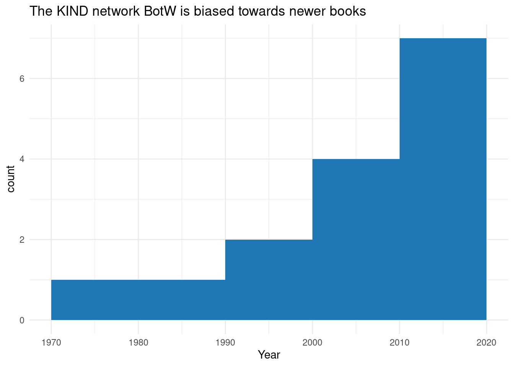

library(reticulate)A Data-Centric Introduction to Python
A note on this mixed R/Python Quarto file: the text and Python sections were written in a Jupyter notebook, then converted into a Quarto document by:
quarto convert a_data_centric_introduction_to_python.ipynb
R sections, and the tabsets were added, and the document was then knitted using R Quarto in Rstudio by attaching the reticulate (Ushey, Allaire, and Tang 2024) package:
A data-centric introduction to Python
This is a friendly beginner session introducing users to Python. It’s health-and-social-care opinionated, assumes no previous Python knowledge, and will have lots of scope for practical demonstrations. Given that lots of users in the KIND network will have some prior experience of R, we’ll introduce some key Python features by comparison with R
Session structure
- a brief general-purpose chat for intro to the language
- how to read and write Python (jupyter/VS Code/Posit workbench/positron)
- a side-note about Excel Python
- Python for R developers - a practical demonstration
Python introduction
- “Python is a high-level, general-purpose programming language.”
- massive user-base
- highly extensible and flexible (\(10^5\) modules)
- the second-best language for everything
- multi-paradigm (oop, structured, …)
Reading and writing Python
- you’ll need:
- Python, currently at 3.12
- (almost certainly) something to manage modules - like pip or conda
- (almost certainly) an integrated development environment. Loads of options:
- practical demo of Jupyter labs
- non-free use in posit.cloud
- Rstudio via reticulate / Jupyter
- VSCode, which is pretty well industry standard for the wider Python ecosystem
- positron, which is the new kid for data-flavoured Python work
Excel Python
- Python is coming to Excel, apparently…
- roll-out slower than expected
- gives an alternative to VBA etc
- code gets executed in the cloud, so no infrastructure faff…
- but a potential information governance headache
- on the offchance that you have it available,
=PY()is the key function
Python for R people
You’re welcome to follow along using the free basic Python set-up at W3schools
- “hello world!”
- indents vs brackets
- Rmarkdown vs Jupyter
- packages vs modules - for data from csv comparison
- basic work with tabular data - for methods
- vector/tibble/list vs list/tuple/dict/set - for vectorisation vs list comps
- pandas for tabular data
- plotting comparison
“hello world!”
Initially, there’s very little to choose between R and Python, and everything is likely to feel very familiar..
print("hello world!")hello world!1 + 23hw = "hello " + "world" + "!"
hw'hello world!'"hello world"[1] "hello world"1 + 2[1] 3hw <- paste("hello", "world", "!")
hw[1] "hello world !"Indents
- a first big difference: indents matter in Python
- they’re non-optional with proper syntactic function
- broadly correspond to curly brackets in R
word = "care"
if word == "care":
print("I have found someone from care")
else:
print("No, I haven't found anyone from care")I have found someone from careword <- "care"
if (word == "care") {
print("I have found someone from care")
} else {
print("No, I haven't found anyone from care")
}[1] "I have found someone from care"Rmarkdown/Quarto vs Jupyter
- Jupyter provides interactive code- and markdown editing. Compare to the render/knit-based workflow of qmd/Rmd
- web-based, so perhaps more like posit.cloud / workbench than Rstudio
- comparatively harder to edit .ipynb files than .Rmd/.qmd in other tools
Packages vs modules
We’ll load the pandas module in Python, and the readr package in R (Wickham, Hester, and Bryan 2024) to compare and contrast loading external functions. We’ll use those to read some sample data (the KIND book of the week dataset).
botw_dat = "https://raw.githubusercontent.com/NES-DEW/KIND-community-standards/main/data/KIND_book_of_the_week.csv"
import pandas
botw = pandas.read_csv(botw_dat)But we also have a lot of options for loading modules. We can alias, most usefully to give us short names for commonly-used functions:
import pandas as pd
botw = pd.read_csv(botw_dat)We could even load an individual function from a module:
from pandas import read_csv as read_csv
botw = read_csv(botw_dat)
# one minor bit of cheating - we'll coerce the Year column to numeric
botw = botw.replace("1979 (1935)", 1979)
botw["Year"] = pandas.to_numeric(botw["Year"])There are comparatively fewer options for package loading in R. You’d traditionally attach a whole package using library:
library(readr)
botw_dat <- "https://raw.githubusercontent.com/NES-DEW/KIND-community-standards/main/data/KIND_book_of_the_week.csv"
botw <- read_csv(botw_dat)You can load individual functions by namespacing via :::
botw <- readr::read_csv(botw_dat)It is also possible, although non-standard, to alias individual functions:
steve <- readr::read_csv
botw <- steve(botw_dat)Fun with tabular data
Doing some basic playing with our tabular data shows that Python uses methods - like a local version of a functions that are specific to certain types of object. While methods can be used in R, in practice most R code relies on functions.
Both shape and index are methods that we’ve imported from pandas. They’ll only work in pandas objects, which we’ll talk about more below.
botw.shape # shape is a method(17, 8)len(botw.index) # as is index17botw.shape[0] # Python is 0-indexed17dim(botw) # dim is a function[1] 17 8nrow(botw) # as is nrow[1] 17dim(botw)[1] # Python is 1-indexed[1] 17Data types
- there are four basic data types in Python
- list
- tuple
- dict
- set
numbers_list = [1,2,3,4,5] # changeable
numbers_list[1, 2, 3, 4, 5]numbers_tuple = (1,2,3,4,5) # unchangeable
numbers_tuple(1, 2, 3, 4, 5)numbers_dict = {"one":1, "two":2, "three":3} # changeable (now), no duplicates
numbers_dict{'one': 1, 'two': 2, 'three': 3}numbers_set = {1,2,3,4,5} # unchangeable, no duplicates
numbers_set{1, 2, 3, 4, 5}# Modify in place semantics
numbers_list.reverse()- R has several basic data types, but in practice only three are commonly encountered. These are the vector, the data frame, and the list (confusing!):
numbers_vector <- c(1,2,3,4,5)
numbers_vector[1] 1 2 3 4 5numbers_dataframe <- data.frame(nums = numbers_vector)
numbers_dataframe nums
1 1
2 2
3 3
4 4
5 5numbers_list <- list(numbers_vector, numbers_dataframe)
numbers_list[[1]]
[1] 1 2 3 4 5
[[2]]
nums
1 1
2 2
3 3
4 4
5 5Loops, list comprehensions, and vectorization
There are various methods for repeatedly running code. We’ll demonstrate a couple of simple methods here. Note that both Python and R have rich and powerful functional programming tools available (like map), but we’ll park those for now.
You’ll need to use loops, or (much nicer) list comprehension in Python. There’s no exact counterpart of R’s vectorized functions:
double_numbers_loop = []
for n in numbers_list:
double_numbers_loop.append(n * 2)
double_numbers_loop[10, 8, 6, 4, 2]List comprehension
Like a lovely lightweight loop syntax
double_numbers_list = [n*2 for n in numbers_list]
double_numbers_list[10, 8, 6, 4, 2]# and, more fancy...
double_even_numbers_list = [n*2 for n in numbers_list if (n%2 == 0) ]
double_even_numbers_list[8, 4]By and large, R is at its best with vectorized functions:
double_numbers_vector <- numbers_vector * 2
double_numbers_vector[1] 2 4 6 8 10Loops are possible too
double_numbers_loop <- vector("numeric", length = length(numbers_vector))
for (i in numbers_vector) {
double_numbers_loop[i] <- i * 2
}R has copy-on-modify semantics, and so care needs to be taken to avoid writing poorly-performing loops. That means that loops are used comparatively rarely in R.
Tabular data basics
- we’ll do a quick overview of pandas, based on their excellent 10 minute overview
- our
botwobject is a DataFrame, which is based on a dict- like tibbles, DataFrames can contain columns of different types
botw.dtypes # find out what we're dealing withDate object
Author object
Year int64
Title object
ISBN int64
Worldcat object
KnowledgeNetwork object
Description object
dtype: objectbotw.head() # shows first few rows Date ... Description
0 06/03/2024 ... The Code Book: The Secret History of Codes and...
1 13/03/2024 ... Here's a book of the week suggestion following...
2 20/03/2024 ... NaN
3 27/03/2024 ... NaN
4 24/04/2024 ... We're looking at regular expressions in the co...
[5 rows x 8 columns]botw.index # effectively counts rowsRangeIndex(start=0, stop=17, step=1)botw.columns # gives column namesIndex(['Date', 'Author', 'Year', 'Title', 'ISBN', 'Worldcat',
'KnowledgeNetwork', 'Description'],
dtype='object')botw.describe() # simple summary Year ISBN
count 17.000000 1.700000e+01
mean 2005.764706 9.781170e+12
std 11.557083 6.465649e+08
min 1979.000000 9.780140e+12
25% 2000.000000 9.780632e+12
50% 2010.000000 9.781473e+12
75% 2016.000000 9.781785e+12
max 2019.000000 9.781857e+12botw.sort_values("Year") # sorting by column values Date ... Description
9 29/05/2024 ... If last week's book was a paean to the use of ...
2 20/03/2024 ... NaN
6 08/05/2024 ... After the discussion last week about the troub...
0 06/03/2024 ... The Code Book: The Secret History of Codes and...
15 10/07/2024 ... There are a lot of statistics textbooks out th...
12 19/06/2024 ... Last week's recommendation about agnotology sp...
13 26/06/2024 ... We're still on a mini-exploration of manufactu...
10 05/06/2024 ... It's now close to twenty years old, and deals ...
7 15/05/2024 ... If I was posh enough to have a Latin motto, it...
1 13/03/2024 ... Here's a book of the week suggestion following...
11 12/06/2024 ... While the word [agnotology](https://simple.wik...
16 17/07/2024 ... This book suggestion comes from a conversation...
4 24/04/2024 ... We're looking at regular expressions in the co...
3 27/03/2024 ... NaN
14 03/07/2024 ... This week's BotW suggestion comes from Anna Sc...
8 22/05/2024 ... A love-letter to the power of domain knowledge...
5 01/05/2024 ... Anyone who works with data knows that our data...
[17 rows x 8 columns]botw["Date"] # selecting a column and creating a series0 06/03/2024
1 13/03/2024
2 20/03/2024
3 27/03/2024
4 24/04/2024
5 01/05/2024
6 08/05/2024
7 15/05/2024
8 22/05/2024
9 29/05/2024
10 05/06/2024
11 12/06/2024
12 19/06/2024
13 26/06/2024
14 03/07/2024
15 10/07/2024
16 17/07/2024
Name: Date, dtype: objectbotw[2:4] # subsetting by index using a slice and returning a DataFrame Date Author ... KnowledgeNetwork Description
2 20/03/2024 David Oldroyd ... NaN NaN
3 27/03/2024 Katrine Marçal ... NaN NaN
[2 rows x 8 columns]botw[["Date"]] # subsetting entire columns Date
0 06/03/2024
1 13/03/2024
2 20/03/2024
3 27/03/2024
4 24/04/2024
5 01/05/2024
6 08/05/2024
7 15/05/2024
8 22/05/2024
9 29/05/2024
10 05/06/2024
11 12/06/2024
12 19/06/2024
13 26/06/2024
14 03/07/2024
15 10/07/2024
16 17/07/2024botw.loc[4] # subsetting by index using a slice and returning a seriesDate 24/04/2024
Author Tom Lean
Year 2016
Title Electronic Dreams: How 1980s Britain Learned t...
ISBN 9781472918338
Worldcat https://search.worldcat.org/title/907966036
KnowledgeNetwork NaN
Description We're looking at regular expressions in the co...
Name: 4, dtype: objectbotw.loc[4, ["Author", "Year"]] # subsetting by index and columns and returning a DataFrameAuthor Tom Lean
Year 2016
Name: 4, dtype: objectbotw[botw["Year"] > 2010].sort_values("Year") # subsetting by years, and sorting Date ... Description
1 13/03/2024 ... Here's a book of the week suggestion following...
11 12/06/2024 ... While the word [agnotology](https://simple.wik...
16 17/07/2024 ... This book suggestion comes from a conversation...
3 27/03/2024 ... NaN
4 24/04/2024 ... We're looking at regular expressions in the co...
8 22/05/2024 ... A love-letter to the power of domain knowledge...
14 03/07/2024 ... This week's BotW suggestion comes from Anna Sc...
5 01/05/2024 ... Anyone who works with data knows that our data...
[8 rows x 8 columns]botw[botw["Author"].isin(["Katrine Marçal", "Caroline Criado Perez"])] # finding matching values Date ... Description
3 27/03/2024 ... NaN
5 01/05/2024 ... Anyone who works with data knows that our data...
[2 rows x 8 columns]botw.dropna() # removes any missing values in the whole DataFrame Date ... Description
11 12/06/2024 ... While the word [agnotology](https://simple.wik...
14 03/07/2024 ... This week's BotW suggestion comes from Anna Sc...
15 10/07/2024 ... There are a lot of statistics textbooks out th...
[3 rows x 8 columns]botw["Title"].str.lower() # returning the title column as a lower-case series0 the code book
1 ghost in the wires
2 the arch of knowledge
3 who cooked adam smith's dinner
4 electronic dreams: how 1980s britain learned t...
5 invisible women: exposing data bias in a world...
6 the mismeasure of man (2nd ed)
7 being wrong: adventures in the margin of error
8 bad blood: secrets and lies in a silicon valle...
9 genesis and development of a scientific fact
10 in the beginning was the worm : finding the se...
11 merchants of doubt
12 harvey's heart: the discovery of blood circula...
13 dark remedy: the impact of thalidomide and its...
14 how emotions are made
15 medical statistics at a glance
16 the half-life of facts
Name: Title, dtype: objectbotw["Date"] = pandas.to_datetime(botw["Date"],format='%d/%m/%Y') # fixing publication dates
botw.groupby(pd.DatetimeIndex(botw['Date']).month)[["Year"]].mean("Year") # average year of publication by month of botw Year
Date
3 2003.0
4 2016.0
5 2004.4
6 2004.5
7 2010.0library(dplyr) # we'll need dplyr for this work
str(botw) # shows data types etcspc_tbl_ [17 × 8] (S3: spec_tbl_df/tbl_df/tbl/data.frame)
$ Date : chr [1:17] "06/03/2024" "13/03/2024" "20/03/2024" "27/03/2024" ...
$ Author : chr [1:17] "Simon Singh" "Kevin Mitnick" "David Oldroyd" "Katrine Marçal" ...
$ Year : chr [1:17] "1999" "2011" "1986" "2016" ...
$ Title : chr [1:17] "The Code Book" "Ghost in the Wires" "The Arch of Knowledge" "Who Cooked Adam Smith's Dinner" ...
$ ISBN : num [1:17] 9.78e+12 9.78e+12 9.78e+12 9.78e+12 9.78e+12 ...
$ Worldcat : chr [1:17] "https://search.worldcat.org/title/59579840" "https://search.worldcat.org/title/773175688" "https://search.worldcat.org/title/12663957" "https://search.worldcat.org/title/933444501" ...
$ KnowledgeNetwork: chr [1:17] NA NA NA NA ...
$ Description : chr [1:17] "The Code Book: The Secret History of Codes and Code-Breaking a book by . (bookshop.org) (to buy online but supp"| __truncated__ "Here's a book of the week suggestion following on from the codes theme from last time. It's the autobiography o"| __truncated__ NA NA ...
- attr(*, "spec")=
.. cols(
.. Date = col_character(),
.. Author = col_character(),
.. Year = col_character(),
.. Title = col_character(),
.. ISBN = col_double(),
.. Worldcat = col_character(),
.. KnowledgeNetwork = col_character(),
.. Description = col_character()
.. )
- attr(*, "problems")=<externalptr> head(botw) # shows first few rows# A tibble: 6 × 8
Date Author Year Title ISBN Worldcat KnowledgeNetwork Description
<chr> <chr> <chr> <chr> <dbl> <chr> <chr> <chr>
1 06/03/2024 Simon Si… 1999 The … 9.78e12 https:/… <NA> The Code B…
2 13/03/2024 Kevin Mi… 2011 Ghos… 9.78e12 https:/… <NA> Here's a b…
3 20/03/2024 David Ol… 1986 The … 9.78e12 https:/… <NA> <NA>
4 27/03/2024 Katrine … 2016 Who … 9.78e12 https:/… <NA> <NA>
5 24/04/2024 Tom Lean 2016 Elec… 9.78e12 https:/… <NA> We're look…
6 01/05/2024 Caroline… 2019 Invi… 9.78e12 https:/… <NA> Anyone who…nrow(botw) # counts rows[1] 17names(botw) # column names[1] "Date" "Author" "Year" "Title"
[5] "ISBN" "Worldcat" "KnowledgeNetwork" "Description" summary(botw) Date Author Year Title
Length:17 Length:17 Length:17 Length:17
Class :character Class :character Class :character Class :character
Mode :character Mode :character Mode :character Mode :character
ISBN Worldcat KnowledgeNetwork Description
Min. :9.780e+12 Length:17 Length:17 Length:17
1st Qu.:9.781e+12 Class :character Class :character Class :character
Median :9.781e+12 Mode :character Mode :character Mode :character
Mean :9.781e+12
3rd Qu.:9.782e+12
Max. :9.782e+12 botw |>
arrange(Year) # native pipe operator in R. Piped code in Python requires modules# A tibble: 17 × 8
Date Author Year Title ISBN Worldcat KnowledgeNetwork Description
<chr> <chr> <chr> <chr> <dbl> <chr> <chr> <chr>
1 29/05/2024 Ludwig … 1979… Gene… 9.78e12 https:/… <NA> "If last w…
2 20/03/2024 David O… 1986 The … 9.78e12 https:/… <NA> <NA>
3 08/05/2024 Stephen… 1996 The … 9.78e12 https:/… <NA> "After the…
4 06/03/2024 Simon S… 1999 The … 9.78e12 https:/… <NA> "The Code …
5 10/07/2024 Aviva P… 2000 Medi… 9.78e12 https:/… https://nhs.pri… "There are…
6 19/06/2024 Andrew … 2001 Harv… 9.78e12 https:/… <NA> "Last week…
7 26/06/2024 Trent D… 2001 Dark… 9.78e12 https:/… <NA> "We're sti…
8 05/06/2024 Andrew … 2004 In t… 9.78e12 https:/… <NA> "It's now …
9 15/05/2024 Kathryn… 2010 Bein… 9.78e12 https:/… <NA> "If I was …
10 13/03/2024 Kevin M… 2011 Ghos… 9.78e12 https:/… <NA> "Here's a …
11 12/06/2024 Naomi O… 2012 Merc… 9.78e12 https:/… https://nhs.pri… "While the…
12 17/07/2024 Samuel … 2012 The … 9.78e12 https:/… <NA> "This book…
13 27/03/2024 Katrine… 2016 Who … 9.78e12 https:/… <NA> <NA>
14 24/04/2024 Tom Lean 2016 Elec… 9.78e12 https:/… <NA> "We're loo…
15 22/05/2024 John Ca… 2018 Bad … 9.78e12 https:/… <NA> "A love-le…
16 03/07/2024 Lisa Fe… 2018 How … 9.78e12 https:/… https://nhs.pri… "This week…
17 01/05/2024 Carolin… 2019 Invi… 9.78e12 https:/… <NA> "Anyone wh…botw$Date # selecting a column as a vector [1] "06/03/2024" "13/03/2024" "20/03/2024" "27/03/2024" "24/04/2024"
[6] "01/05/2024" "08/05/2024" "15/05/2024" "22/05/2024" "29/05/2024"
[11] "05/06/2024" "12/06/2024" "19/06/2024" "26/06/2024" "03/07/2024"
[16] "10/07/2024" "17/07/2024"botw |>
slice(3:4) # subsetting by index using slice and returning a tibble Note different indexing behaviour# A tibble: 2 × 8
Date Author Year Title ISBN Worldcat KnowledgeNetwork Description
<chr> <chr> <chr> <chr> <dbl> <chr> <chr> <chr>
1 20/03/2024 David Ol… 1986 The … 9.78e12 https:/… <NA> <NA>
2 27/03/2024 Katrine … 2016 Who … 9.78e12 https:/… <NA> <NA> botw |>
select(Date) # subsetting entire columns# A tibble: 17 × 1
Date
<chr>
1 06/03/2024
2 13/03/2024
3 20/03/2024
4 27/03/2024
5 24/04/2024
6 01/05/2024
7 08/05/2024
8 15/05/2024
9 22/05/2024
10 29/05/2024
11 05/06/2024
12 12/06/2024
13 19/06/2024
14 26/06/2024
15 03/07/2024
16 10/07/2024
17 17/07/2024as.character(botw[5,]) # subsetting by index and coercing to a vector. This is pretty non-idiomatic in R[1] "24/04/2024"
[2] "Tom Lean"
[3] "2016"
[4] "Electronic Dreams: How 1980s Britain Learned to Love the Computer"
[5] "9781472918338"
[6] "https://search.worldcat.org/title/907966036"
[7] NA
[8] "We're looking at regular expressions in the community meetup today. Regex, as the wikipedia page suggests, have been around for ages - positively archaeological in computing terms. So for the book of the week this week, I wanted to show off one of the most interesting bits of social history I've read: Tom Lean's Electronic Dreams. Lots of the history of computing is either primarily about the technical details, or is a broadly nostalgic look at obsolete tech. This book doesn't do either of those, instead spending its time giving a concise account of how personal computing worked as a social phenomenon. For example, how did people start getting paid to write computer games? What happened when the BBC got involved in personal computing? What happened to the various promises of digital revolutions as a replacement for manufacturing industries."botw[5,] |>
select(Author, Year) # subsetting by index and columns and returning a tibble# A tibble: 1 × 2
Author Year
<chr> <chr>
1 Tom Lean 2016 botw |>
filter(Year > 2010) |>
arrange(Year) # subsetting by filtering years, then sorting using dplyr# A tibble: 8 × 8
Date Author Year Title ISBN Worldcat KnowledgeNetwork Description
<chr> <chr> <chr> <chr> <dbl> <chr> <chr> <chr>
1 13/03/2024 Kevin Mi… 2011 Ghos… 9.78e12 https:/… <NA> "Here's a …
2 12/06/2024 Naomi Or… 2012 Merc… 9.78e12 https:/… https://nhs.pri… "While the…
3 17/07/2024 Samuel A… 2012 The … 9.78e12 https:/… <NA> "This book…
4 27/03/2024 Katrine … 2016 Who … 9.78e12 https:/… <NA> <NA>
5 24/04/2024 Tom Lean 2016 Elec… 9.78e12 https:/… <NA> "We're loo…
6 22/05/2024 John Car… 2018 Bad … 9.78e12 https:/… <NA> "A love-le…
7 03/07/2024 Lisa Fel… 2018 How … 9.78e12 https:/… https://nhs.pri… "This week…
8 01/05/2024 Caroline… 2019 Invi… 9.78e12 https:/… <NA> "Anyone wh…botw[which(botw$Author %in% c("Katrine Marçal", "Caroline Criado Perez")),] # finding matching values using base R# A tibble: 2 × 8
Date Author Year Title ISBN Worldcat KnowledgeNetwork Description
<chr> <chr> <chr> <chr> <dbl> <chr> <chr> <chr>
1 27/03/2024 Katrine … 2016 Who … 9.78e12 https:/… <NA> <NA>
2 01/05/2024 Caroline… 2019 Invi… 9.78e12 https:/… <NA> Anyone who…botw |>
tidyr::drop_na() # removes any missing values in the whole tibble# A tibble: 3 × 8
Date Author Year Title ISBN Worldcat KnowledgeNetwork Description
<chr> <chr> <chr> <chr> <dbl> <chr> <chr> <chr>
1 12/06/2024 Naomi Or… 2012 Merc… 9.78e12 https:/… https://nhs.pri… While the …
2 03/07/2024 Lisa Fel… 2018 How … 9.78e12 https:/… https://nhs.pri… This week'…
3 10/07/2024 Aviva Pe… 2000 Medi… 9.78e12 https:/… https://nhs.pri… There are …botw$Title |>
tolower() # returning the title column as a lower-case vector [1] "the code book"
[2] "ghost in the wires"
[3] "the arch of knowledge"
[4] "who cooked adam smith's dinner"
[5] "electronic dreams: how 1980s britain learned to love the computer"
[6] "invisible women: exposing data bias in a world designed for men"
[7] "the mismeasure of man (2nd ed)"
[8] "being wrong: adventures in the margin of error"
[9] "bad blood: secrets and lies in a silicon valley startup"
[10] "genesis and development of a scientific fact"
[11] "in the beginning was the worm : finding the secrets of life in a tiny hermaphrodite"
[12] "merchants of doubt"
[13] "harvey's heart: the discovery of blood circulation"
[14] "dark remedy: the impact of thalidomide and its revival as a vital medicine"
[15] "how emotions are made"
[16] "medical statistics at a glance"
[17] "the half-life of facts" botw |>
mutate(Date = lubridate::dmy(Date)) |> # fixing publication dates
group_by(month = lubridate::floor_date(Date, unit = "month")) |>
summarise(mean_year = mean(as.numeric(Year), na.rm = T)) # average year of publication by month of botw# A tibble: 5 × 2
month mean_year
<date> <dbl>
1 2024-03-01 2003
2 2024-04-01 2016
3 2024-05-01 2011.
4 2024-06-01 2004.
5 2024-07-01 2010 Plots
Using matplotlib
import matplotlib.pyplot as plt
plt.hist(botw["Year"], bins = [1970, 1980, 1990, 2000, 2010, 2020])
plt.title("The KIND network BotW is biased towards newer books")
library(ggplot2)
botw |>
mutate(Year = readr::parse_number(Year)) |>
ggplot() +
geom_histogram(aes(x = Year), fill="#1F77B4", binwidth = 10, center = 1985) +
ggtitle("The KIND network BotW is biased towards newer books") +
theme_minimal()
References
Ushey, Kevin, JJ Allaire, and Yuan Tang. 2024. “Reticulate: Interface to ’Python’.” https://CRAN.R-project.org/package=reticulate.
Wickham, Hadley, Jim Hester, and Jennifer Bryan. 2024. “Readr: Read Rectangular Text Data.” https://CRAN.R-project.org/package=readr.